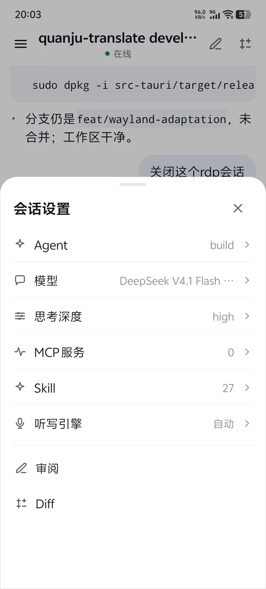
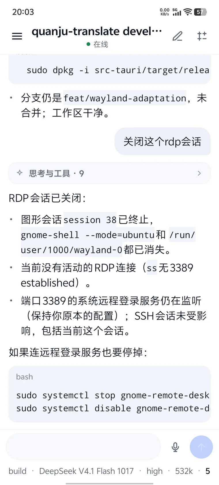

会话就在手边
思考过程、工具调用和排队输入都保留。运行中继续输入，结束后自动发送。
流式输出
排队输入
底部设置

ANDROID · OPENCODE REMOTE
电脑上的会话继续跑，手机随时接手。读输出、换模型、跑斜杠命令、审阅代码， 或者直接用语音说。

$ ocremote status listen 0.0.0.0:8787 direct ws://192.168.1.42:8787 relay off opencode online clients 1
不是缩小的桌面，而是重新排过的远程会话。流式输出、命令、审阅和同步， 都在同一块屏幕上完成。
思考过程、工具调用和排队输入都保留。运行中继续输入，结束后自动发送。

对齐 opencode TUI。终端专属命令置灰，不在手机上假装可用。
/models切换模型/agents切换 Agent/skills附加下一次发送/status查看会话状态/terminal手机端不支持选中行区间写评论，评论会合成一条 review prompt 发回当前会话。

其他终端切换 Agent 或模型，手机不切页就更新。会话被删除时回到空会话页。
agent.selectedbuild → planmodel.selecteddeepseek-v4.1session.deleted回到空会话主机靠近 opencode，手机负责操作，中继只在中转时出现。同一局域网可以完全不装中继。
和 opencode 一起运行，密码留在本机。
$ ocremote status listen 0.0.0.0:8787 direct ws://192.168.1.42:8787 relay off opencode online
扫码配对，核对指纹后连接。
可选。只转发密文，适合跨网络。
$ ocremote-relay admin status
{
"relayId": "relay_4d5b8c0…",
"v": 2,
"hosts": 0,
"clients": 0
}
opencode 继续只监听 127.0.0.1。手机和主机之间是 Noise NK； 中继看到的是房间和时间，不是代码。
深浅主题、侧边栏、Diff 和行内评论都来自实际客户端。
下载 0.1.1。APK 按手机架构选择，主机包自带 Bun 和语音模型。
打开最新 Release ↗当前 APK 使用 Expo debug keystore 签名，正式分发前需要替换生产 keystore。Release APK 不包含 QA 测试 CA。